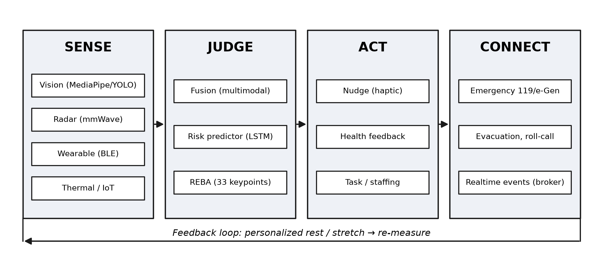
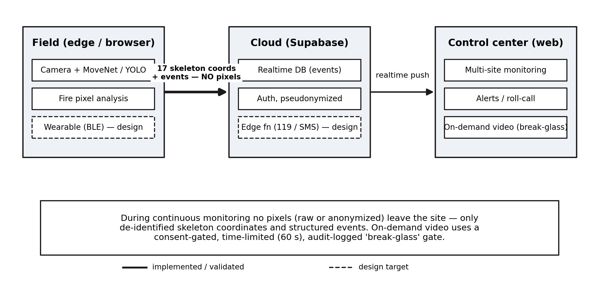
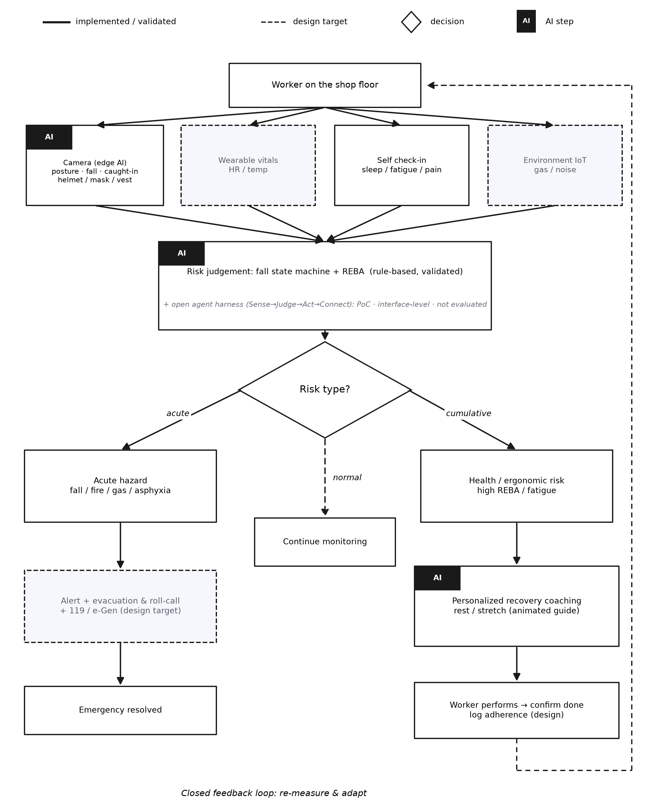
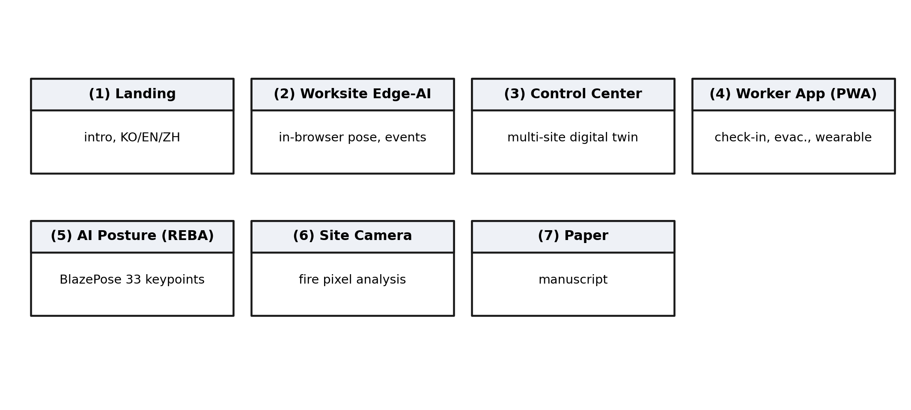
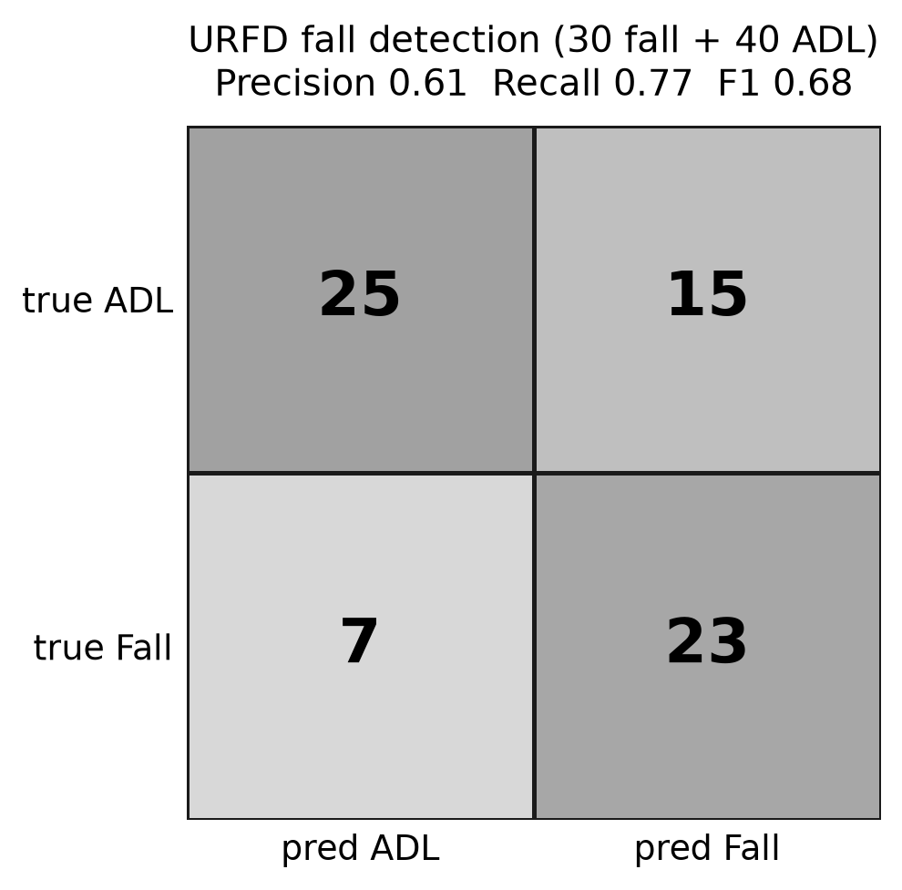

SHine-K는 설치가 필요 없는 중소제조 안전·건강 플랫폼입니다. 현장 브라우저가 직접 자세·낙상·PPE·화재를 분석하고, 중앙 관제 트윈에는 비식별 스켈레톤과 위험 이벤트만 — 픽셀은 단 하나도 — 전송합니다.
run_20260722_195713_full70 (전체) · run_20260627_222419 (부분집합) · thresholds unchanged · seed 20260722
소규모 사업장은 안전 인력도, 서버도, 카메라 인프라도 감당할 수 없습니다 — 그런데 위험은 그곳에 몰려 있습니다. 병목은 알고리즘이 아니라 배포입니다.
카메라-서버형 안전시스템을 갖출 여력이 가장 없는 소기업까지 형사책임이 확대되었습니다.
생체 감시는 전 세계적으로 규제 대상입니다. 시스템은 신원·감정이 아니라 물리적 안전 상태만 읽어야 합니다.
고영향 AI 의무가 영상·생체 기반 모니터링의 기준선을 끌어올립니다.
각 현장에서 브라우저가 AI 엣지 노드입니다. 중앙 트윈은 이벤트를 구독해 수신된 스켈레톤을 보간하여 근로자의 자세를 재구성합니다 — 영상은 결코 수신하지 않습니다.




현장 모듈에 실린 상태머신을 임계값 재튜닝 없이 그대로 UR Fall Detection 데이터셋에 적용했습니다 (백본도 배포 모델과 동일한 MoveNet MultiPose).
표준자세 부분집합(낙상 8+ADL 8): recall 1.00 · precision 0.73 · F1 0.84 — 전체 런은 "부분집합 수치는 상한"이라던 원고 자체 경고가 옳았음을 확인했습니다.
§4.1 · Table 3 · run_20260722_195713_full70 + run_20260627_222419fall-01…08: 150 · 81 · 202 · 41 · 118 · 57 · 122 · 51 frames
프레임 진단 결과: 미탐 7건은 임계값을 순간적으로만 통과(최대 tilt 89°)하고 700ms 확인창을 지속하지 못했으며, 오탐 15건은 깊은 숙임형과 의도적 눕기형으로 갈립니다 — 막대는 부분집합 런의 감지 지연.
§4.1 · Figure 4 · eval_per_sequence.csv (양쪽 런)2–3자릿수 작은 트래픽 — 한 관제센터가 수십 개 중소사업장을 일반 회선으로 관제할 수 있는 이유입니다.

정직한 단계 표기는 이 논문의 명시적 기여입니다 — 실제 근로자를 지키려는 시스템은 설계 목표를 결과처럼 포장해서는 안 됩니다.
영상·레이더·웨어러블·열화상을 단일 시계열로 융합해 사고 이전에 확률을 산출.
영상은 엣지 잔류, 가명처리 후 구조화 이벤트만 송신하는 관제 데이터 구조.
Sense→Judge→Act→Connect 역할분담 에이전트의 자율 캐스케이드 의사결정.
브라우저 키포인트만으로 근골격 위험을 즉시 산출 — 앱·서버 불필요.
생체신호와 작업환경을 결합한 단일 조기경보 지수 — 과로·온열질환 예방.
모델 없이 불꽃색+시계열 깜빡임+연기확산 픽셀분석으로 경량 판정.
광역 경보 푸시와 '대피완료' 응답으로 집결·미확인 인원을 실시간 집계.
항목별 동의 토글 + 안전 행동 보상(지역화폐 연계)으로 자발적 참여 유도 — 보상은 데이터 제공량과 무관.
감지→경보→SMS→119→병상조회를 잇는 응급 연계 프로토콜 — 10초는 현장 파일럿 전의 설계 목표.
본 논문은 제74차 한국컴퓨터정보학회(KSCI) 하계학술대회(제주, 2026.7) 2쪽 발표논문의 대폭 확장본입니다. 본 연구는 교육부·경상북도가 지원하는 경북 ANCHOR 센터의 ANCHOR 사업(2026-ANCHOR-15-102) 지원으로 수행되었습니다 (플랫폼은 경상북도 RISE 5개년 로드맵 2025–2029에 따라 고도화).
교신저자 · 방법론·소프트웨어 · KSCI 발표 — 물리치료학과 · wschoi@kyungwoon.ac.kr
총괄·연구비 — 보건과학대학
검증 — 간호학과
검증·교정 — 간호학과
조사 — 물리치료학과
조사 — 물리치료학과
조사 — 물리치료학과